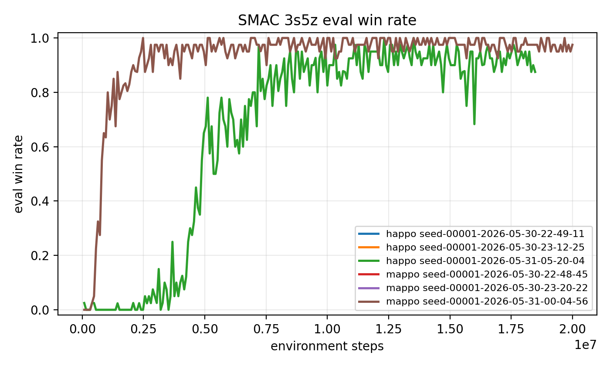
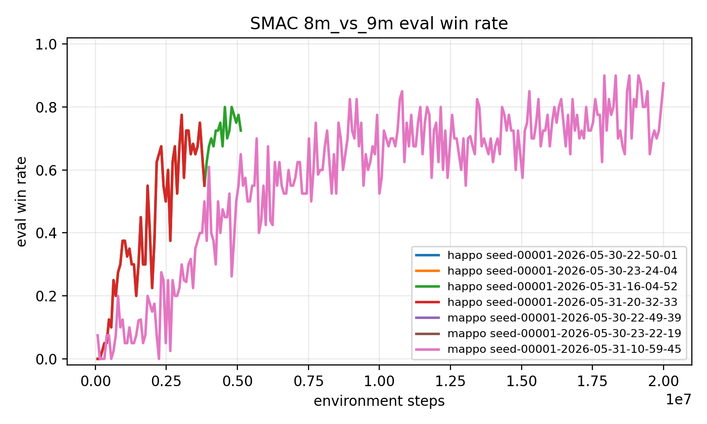

3s5z 和 8m_vs_9m 两个地图上的训练流程。当前工作已经完成环境安装、代码定位、四组 smoke test、四组 10000-step pilot、progress.txt 汇总和 win rate 绘图；单 seed 正式训练已完成 3s5z 上 MAPPO/HAPPO 与 8m_vs_9m 上 MAPPO 的 20000000-step 运行，8m_vs_9m HAPPO 原始 full run latest synced checkpoint 为 5120000 steps，recovery run 已同步到 3840000 steps。由于完整实验矩阵仍在运行，本文现阶段报告重点是复现流程、代码对应关系、已完成 full 结果和阶段性验证结果。
星际争霸多智能体挑战（SMAC）提供了完全合作的多智能体微操任务，适合评估多智能体强化学习算法的协同决策能力。每个智能体只能观察局部信息并选择离散动作，但训练和评估关注的是团队是否能击败敌方单位。本作业关注 MAPPO 与 HAPPO 在 SMAC 上的训练、测试和分析流程。
MAPPO 可以理解为将单智能体 PPO 扩展到多智能体合作场景。每个智能体执行去中心化策略，训练阶段使用集中式信息估计价值函数，并通过 PPO clipped surrogate objective 限制策略更新幅度。相比从零设计复杂的 credit assignment 机制，MAPPO 的重点是把 PPO 中优势估计、策略比值裁剪、熵正则和集中式 critic 组合成稳定的 on-policy 多智能体训练流程。
HAPPO 在异质智能体场景下引入顺序策略更新。其核心思想是使用多智能体优势分解，并在更新当前智能体时通过 factor 修正前序智能体策略更新对联合策略概率比的影响。与 MAPPO 直接独立或共享更新 actor 不同，HAPPO 在一个 update 内按智能体顺序逐个更新策略，并把已经更新过的智能体对联合策略概率的影响累积到后续智能体的 surrogate objective 中。
| 概念 | HARL 位置 | 说明 |
|---|---|---|
| HAPPO actor | happo.py:10 | 定义 HAPPO actor 更新逻辑。 |
| MAPPO actor | mappo.py:10 | 定义 MAPPO actor 更新逻辑。 |
| PPO clip | happo.py:73 | 在 importance ratio 上做 clip。 |
| HAPPO factor | happo.py:79 | actor loss 乘以前序策略更新 factor。 |
| factor 更新 | on_policy_ha_runner.py:115 | 用新旧动作概率比更新 factor。 |
| GAE | on_policy_critic_buffer_ep.py:97 | 从后往前递推 return。 |
| win rate | smac_logger.py:166 | 写入 progress.txt 第三列。 |
HARL 中 HAPPO 与 MAPPO 的核心差别主要体现在 runner 和 actor update 两层。HAPPO runner 初始化 factor 为 1，按固定或随机顺序遍历智能体；每个智能体更新前把当前 factor 写入 actor buffer，更新后用新旧策略动作概率比更新 factor。MAPPO actor 同样计算 PPO clipped surrogate，但没有 HAPPO 的顺序 factor。
实验在本机 Linux 环境中进行。硬件为 NVIDIA GeForce RTX 5090，显存约 32GB。软件环境使用 Conda 创建 harl_hw3，Python 版本为 3.10，PyTorch 为 2.12.0+cu130，CUDA 可用。HARL 克隆到 external/HARL，commit 为 b1af98b0dbab72a2eee9d160751cd09aedbb8ce2。
SMAC 依赖使用 oxwhirl 的 StarCraft Multi-Agent Challenge 包，而不是 PyPI 上同名的算法配置优化库。StarCraft II Linux 4.10 安装到 /home/yongqian/StarCraftII，SMAC maps 已复制到 Maps/SMAC_Maps，共 23 张。验证命令 python -m smac.bin.map_list 能列出目标地图，python -m smac.examples.random_agents 能成功启动 SC2。
实际安装中还处理了 PyTorch 2.12 与 NumPy 1.23 的兼容问题：环境改用 NumPy 2，并通过 scripts/patch_harl_numpy2.py 把 HARL 中旧的 np.int/np.bool 写法替换为 Python 内置类型。
复现过程被拆分为环境安装、命令生成、短训练验证、日志汇总和绘图五个阶段。环境安装由 scripts/setup_env.sh 管理，目标是避免在 base Python 3.13 环境中混装 PyTorch、SMAC 和 HARL。脚本会创建 harl_hw3 环境、安装 HARL editable package、安装 oxwhirl SMAC、安装 gym 0.21，并执行导入检查。
训练命令由 scripts/run_smac_experiments.sh 管理。该脚本提供四种模式：dry-run 打印四组实验命令；smoke 把训练步数、并行环境数和评估 episode 降到很小，用于确认 SC2 可以启动且 HARL 可以写出日志；pilot 默认使用 10000 environment steps，用于正式训练前的短跑检查；full 保留 tuned config 的正式训练设置。这样可以先快速验证链路，再把同一套命令用于长时间正式训练。
日志处理由 scripts/collect_progress.py 和 scripts/plot_win_rate.py 完成。HARL 的 SMAC logger 在 evaluation 阶段将 total_num_steps、平均 episode reward 和 eval_win_rate 写入 progress.txt。收集脚本会扫描 HARL 输出目录和本作业保存的 raw 目录，按地图、算法、实验名、run 和 step 去重，再输出统一 CSV。绘图脚本读取同一批数据，按地图生成 MAPPO/HAPPO 曲线。
实验矩阵包括 MAPPO 与 HAPPO 在 3s5z 和 8m_vs_9m 上的训练。HAPPO 使用 HARL 官方 tuned config；由于当前 HARL commit 缺少这两个地图的 MAPPO tuned config，MAPPO 暂基于同地图 HAPPO tuned config 生成，并切换为 MAPPO 的参数共享和固定顺序设置。当前脚本已经覆盖 dry-run、smoke、pilot 和 full 四种运行模式。
| 算法 | 地图 | 配置来源 |
|---|---|---|
| MAPPO | 3s5z | generated config |
| HAPPO | 3s5z | HARL tuned config |
| MAPPO | 8m_vs_9m | generated config |
| HAPPO | 8m_vs_9m | HARL tuned config |
目前已完成四组 1000 environment steps 的 smoke test，用于验证环境、训练脚本、日志收集和绘图流程。随后又完成了四组 10000-step pilot run，覆盖 MAPPO/HAPPO 与 3s5z/8m_vs_9m 的完整实验矩阵。2026-05-31 已在 tmux 中启动单 seed full tuned config；当前已同步 3s5z MAPPO/HAPPO 与 8m_vs_9m MAPPO 的完整 20000000-step 结果，8m_vs_9m HAPPO 原始 full run latest synced checkpoint 为 5120000 steps；因原始 run 长时间无新 progress 行，已另启 recovery run 并同步到 3840000 steps。由于最后一组 8m_vs_9m HAPPO full run 尚未完成，这些结果仍不能代表完整实验矩阵的最终结论。
| 地图 | 算法 | Step | Eval reward / win rate |
|---|---|---|---|
3s5z | HAPPO | 9600 | 4.0629 / 0.0 |
3s5z | MAPPO | 9600 | 7.6954 / 0.0 |
8m_vs_9m | HAPPO | 9600 | 5.0072 / 0.0 |
8m_vs_9m | MAPPO | 9600 | 7.5108 / 0.0 |
| 地图 | 算法 | Step | Final reward / win rate | Best win rate |
|---|---|---|---|---|
3s5z | MAPPO | 20000000 | 19.8764 / 0.975 | 1.0 |
3s5z | HAPPO | 20000000 | 19.3452 / 0.875 | 1.0 |
8m_vs_9m | MAPPO | 20000000 | 18.9216 / 0.875 | 0.9 |
8m_vs_9m | HAPPO | 5120000 | 17.9525 / 0.725 | 0.8 |
8m_vs_9m | HAPPO recovery | 3840000 | 16.3014 / 0.550 | 0.775 |

3s5z smoke/pilot/full eval win rate。
8m_vs_9m smoke/pilot/full eval win rate；HAPPO full run 仍是阶段性 checkpoint。正式训练完成后，应使用相同脚本重新生成曲线，并重点比较 MAPPO 与 HAPPO 的收敛速度、最终胜率和训练稳定性。对于当前同步结果，主要结论是训练、评估、日志、汇总和绘图链路已经打通；四组 pilot 均能稳定运行到 10000-step 量级；3s5z 上 MAPPO final eval win rate 为 0.975，HAPPO final eval win rate 为 0.875，二者 best win rate 都达到 1.0；8m_vs_9m 上 MAPPO 已完成 20000000 steps，final eval win rate 为 0.875，best win rate 为 0.9。HAPPO/8m_vs_9m 原始 run 当前只同步到 5120000 steps，final eval win rate 为 0.725，best win rate 为 0.8；recovery run 仍处于早期 3840000 steps，因此还不能与 MAPPO 的完整结果做最终公平比较。
当前结果的主要局限是完整矩阵尚未训练结束。SMAC 任务需要大量交互样本才能学习到稳定微操策略，尤其是 8m_vs_9m 这种非对称地图。当前 8m_vs_9m MAPPO 已完成 full run，但 HAPPO 原始 run 仍只有 5120000-step early full checkpoint，recovery run 也只同步到 3840000 steps；这说明最后一组训练还未产出可比较的最终结果，而不是说明 HAPPO 在该地图上无效。正式报告中应继续补充 8m_vs_9m HAPPO 的完整 full 曲线。
当前阶段已经完成环境配置、代码阅读定位、四组 smoke test、四组 10000-step pilot run、单 seed 正式训练启动、三组完整 full run 结果同步和自动绘图。后续正式训练完成后，应把 8m_vs_9m HAPPO 的阶段性曲线替换为完整训练曲线，并基于 win rate 的收敛速度、最终胜率和波动情况讨论 MAPPO 与 HAPPO 的差异。
[1] Yu, C. et al. The Surprising Effectiveness of PPO in Cooperative Multi-Agent Games. NeurIPS, 2022.
[2] Zhong, Y. et al. Heterogeneous-Agent Reinforcement Learning. JMLR, 2024.
[3] Samvelyan, M. et al. The StarCraft Multi-Agent Challenge. arXiv:1902.04043, 2019.